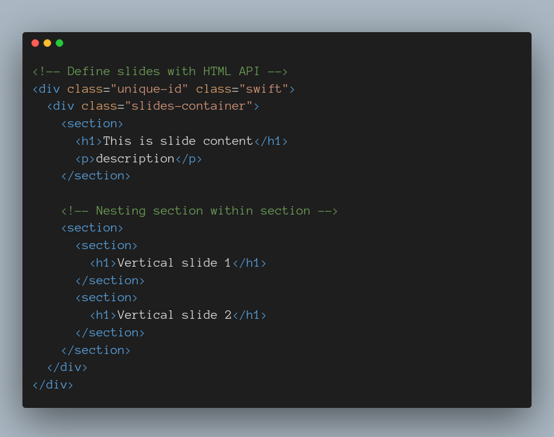
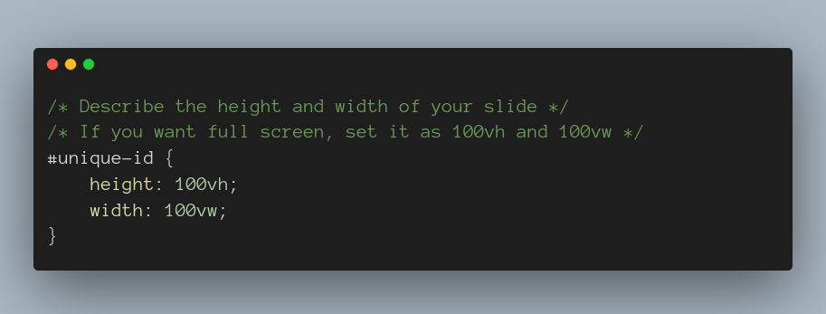
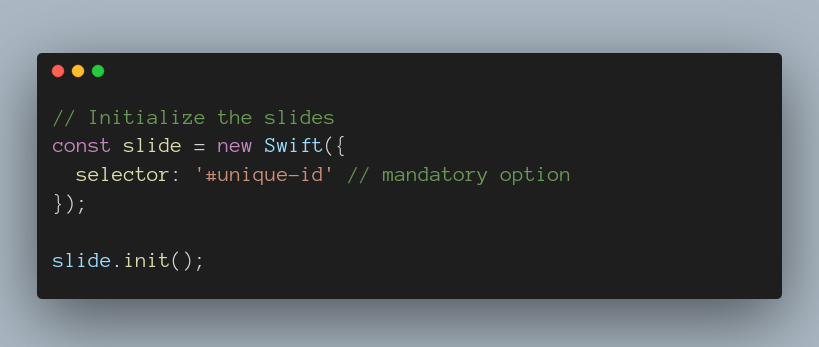

You have to insert a unique DOM selector. It can be an id or a class
You can create a CSS file, add the CSS as following and link it to HTML
For that, create a js file (name anything you want), link it to HTML doc and write the following
Go right for exploring customization options